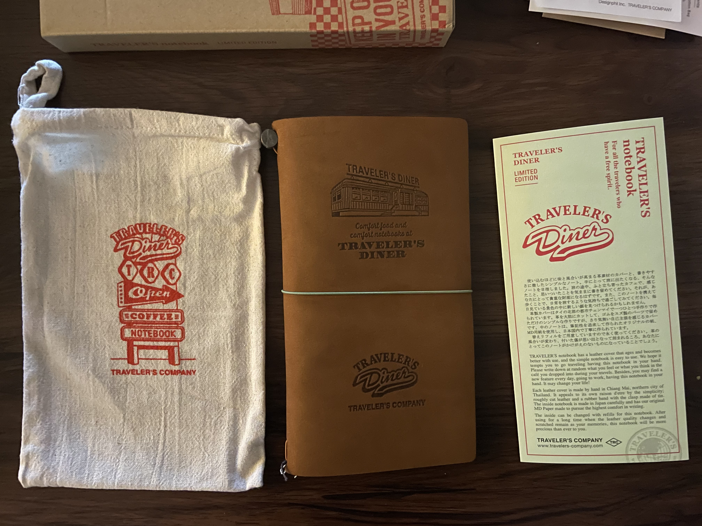

TRAVELER'S COMPANY LIMITED EDITION DINER TRAVELER'S NOTEBOOK (REVIEW)
Traveler's Company, the company known to have founded the traveler's notebook system, has put out a bunch of limited edition notebook sets over the years. Recently, they released a handful of sets that were of various themes (Airlines, Hotel, Train, and Music Records) that didn't appeal to me at all. I thought I wouldn't be tempted to buy any of the limited edition items they put out...
...until they announced that they'd be releasing a diner-themed traveler's notebook.
I absolutely love diners. I've grown up going on countless road trips cross-country to visit my grandparents in the Midwest, and whenever we had to stop for dinner, we would always stop at diners or the chain restaurant equivalent (anybody remember Perkins?) still open late at night. Food is a central aspect in the few positive memories I have regarding my family, and eating a country-fried steak and eggs at 1AM was among them.
So of course, I didn't hesitate to pre-order one as soon as I was able to back in late December. Good thing too, because the pre-orders across multiple stores sold out quickly. I noticed people on the Traveler's Notebook subreddit were anxiously hoping for a restock after the initial inventory sold out.
It finally arrived in the mail this week.
Upon opening it, I was so excited. I knew already what the set would contain, but I was still pleased to see it all in person. The three kraft envelopes may have just been a means to contain the goodies inside them, but I'm looking forward to re-using them in my journal somehow.
I started off with opening one of the smaller envelopes, which contained the charms that come with the set:
The notebook set comes with two charms. One is of a retro-looking car, while the other is a coffee mug with the initials "TRC" engraved on it as a nod to Traveler's Company. These are meant to decorate your notebook cover. Because they're made of brass, they also age overtime, much like your traveler's notebook. I love this about the brass accessories that compliment the traveler's notebook line, because it adds further character to your notebook.

Like any other traveler's notebook you buy from Traveler's Company, the box the notebook is contained in also comes with a small pamphlet attached to it describing the traveler's notebook system. The dreamy prose comes off as a little silly, but it's still a lovely touch.

However, because this is a themed limited edition set, the pamphlet goes on to describe the theme of the set: Traveler's Diner. I love Traveler's Company's new approach with creating these fictional settings that are cozy and inspiring through these themed sets. It gives a more personal feel to the notebook. I always believe in romanticizing even the little things in life, and I consider diners in general to be really comfortable spaces with their large variety of comfort food and quiet atmospheres.
Among the contents of this set, there are two postcards with retro diner aesthetics. I'm kind of meh on this item. I never use postcards unless it's to paste them into my journal, which I might do. I usually treat them like any other paper stationery. It gives more space to write on the page because you can write more on the back of the postcard and tape it in your journal in a way that lets you flip it over to read the back! Regardless, it's just a fun bonus item.
The next item is a set of nine stickers, all of varying retro diner aesthetics. The stickers are actually high-quality and seem durable. I could easily stick them on my computer or my suitcase without worrying about them peeling off or falling apart! I can never say no to stickers, so these are much more favorable than the postcards.
Now, time to show off the actual notebook itself.
Again, like any other Traveler's Company traveler's notebook, the notebook comes in a cloth bag meant to protect the notebook from wear and tear. I personally don't use the cloth bag because I like my traveler's notebook to get dinged up and naturally covered in scratches and scuffs, but I know there are others who aren't into that look and would find use in this. This cloth bag, however, has another retro diner design of neon signs advertising the 'Traveler's Diner.' I just might use the cloth bag just because of how cute it is!
As for the notebook itself...

It's gorgeous.
I've never owned a camel-colored traveler's notebook before since the plain color on its own just didn't appeal to me. I've heard others say the camel traveler's notebook is soft, and they're right. This notebook is soft, like, really soft. I think it's the softest compared to the other traveler's notebooks I've owned. It's a tactile joy to run my hands over, and I have to fight the temptation to rub it against my cheek.
Needless to say, I'm absolutely in love with the leather quality of this cover. The texture alone makes this (expensive) set well worth it. I can see myself stimming with this often by running my fingers over it over and over.
My favorite part about this set, however, definitely has to be the softcover notebook insert it comes with.
Each traveler's notebook from Traveler's Company comes with a free blank insert. With the Diner set, the blank insert is also themed! The cover of the insert looks like the cover of a diner's menu, which is really cool. And that's not all there is to it!
The inner covers display a typical diner menu too! Aaah, I'm just so in love with this layout design. It's so aesthetically pleasing, and I'm obsessed with food-themed items.
I usually don't use blank inserts (I prefer gridded paper myself), but I'm so in love with this notebook insert's design that I actually might use it. My idea is to keep recipes we regularly cook at home. I know my fiancee and I digitally keep them in our shared Google Drive folder, but it doesn't hurt to have an analog cookbook.
That's all of the contents within the Traveler's Diner limited edition set! While the price tag is definitely something to initially balk at, I think it's a worthwhile investment for myself at least because I know I'll have such a good time using this. I don't regret buying this at all, especially since because diner aesthetics are one of my little pleasures, I'll use this more often than if I bought any of the other limited edition sets Traveler's Company has put out. Spending over $100 on a notebook may seem silly to other people, but if it's a special interest for you that brings you joy, who cares?
Plus, the free coaster they gave me for pre-ordering the set doesn't hurt either.
With the charms attached and additional inserts added to the cover, here is my current setup for it!
Right now, I intend on using this as the cover to keep my long-form creative journal in. I mentioned on my current setup page that I wasn't able to fit this journal in the same cover as my bullet journal and novel journal. Temporarily, I kept it in an old brown traveler's notebook (which I will now be giving away to a friend interested in having their own traveler's notebook), but this cover will now be the cover for it.
Additionally, I've kept the themed blank insert in it as well. As I mentioned earlier, I will likely be using it as a cookbook of sorts to keep recipes in!
I'm so excited to use it moving forward.